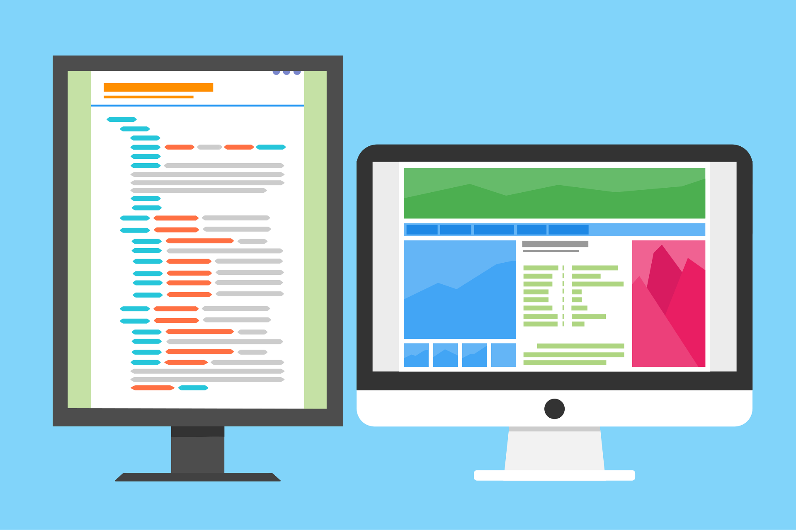

Web Design
We design websites that look sharp and convert visitors into customers. Every page is built around your goals and your audience. You get a fast, clear site that works on every screen and is easy to update.
We are Nordic Digital Studio, or NDS. We are designers, researchers, and developers from the Nordics who like hard problems and clear answers. We take pride in our craft and care about every detail. Our clients range from large companies to individuals with one good idea. We give each one full attention and plain language. No jargon, no surprise invoices, and no going silent for three months
We find the digital problem, then solve the right one. We start with real users, build a first version fast, and test with real people. Then we improve the product in short rounds until results improve. You see progress every week, so you stay in control and avoid surprises at launch. We design and build websites, apps, and digital services. Better products mean happier customers, fewer support requests, and more sales for you.
We design websites that look sharp and convert visitors into customers. Every page is built around your goals and your audience. You get a fast, clear site that works on every screen and is easy to update.
We study how people use your product and remove what slows them down. Research, testing, and iteration lead to interfaces people understand at first glance. Fewer drop-offs, fewer support requests, more sales.
We help you decide what to build and why. We review your market, your users, and your current tools, then set a clear plan with priorities and measurable goals. You spend budget on what moves your business forward.

We offer three core services: web design, UX design, and digital strategy. Web design covers new websites and redesigns of existing ones. UX design covers research, prototyping, and testing for websites, apps, and digital services. Digital strategy covers planning, priorities, and goals for your digital products. You can book one service or combine all three. We work with companies and individuals, and we adjust the scope to your needs and budget. Contact us with your challenge and we will suggest the right starting point.
Email: placeholder@adress.com
Phone: 123456789
Address: Homesteadstreet 1